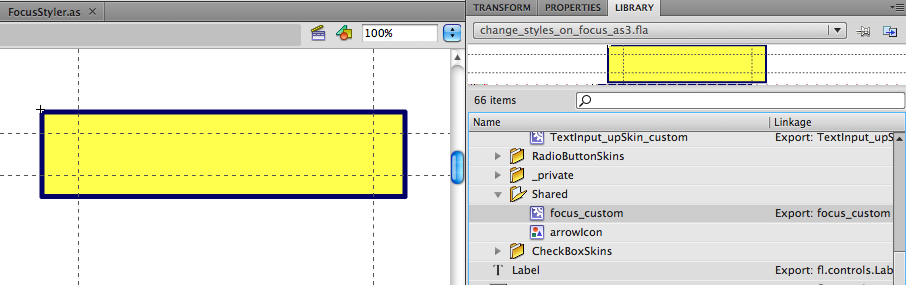

Reskinning Flash components to provide highly visible focus indication
Important Information about Techniques
See Understanding Techniques for WCAG Success Criteria for important information about the usage of these informative techniques and how
they relate to the normative WCAG 2.1 success criteria. The Applicability section
explains the scope of the technique, and the presence of techniques for a specific
technology does not imply that the technology can be used in all situations to create
content that meets WCAG 2.1.
Applicability
Adobe Flash Professional version MX and higher
Adobe Flex
Note
Adobe has plans to stop updating and distributing the Flash Player at the end of 2020,
and encourages authors interested in creating accessible web content to use HTML.
This technique is not referenced from any Understanding document.
Description
The purpose of this technique is to allow the author to use ActionScript and component
skins to apply a strong visual indication when a component receives focus. In this
particular technique, both the component's background color and border will change.
When the component loses focus, it returns to its normal styling.
The visual highlights will be applied by switching some of the component's skin
parts. The Standard Flash components each have their own set of skins that make
up the component's visual appearance. Each part is represented by a MovieClip which
can be edited or replaced in order to customize how the component looks. The most
relevant skin for this technique is the focusRectSkin skin, which is shared by
all components. By default this skin applies a subtle visual highlight when the
component receives focus.
This technique can be applied through the following steps:
Create a customized version of focusRectSkin.
Use scripting to associate the component with the customized skin.
There are two ways to customize a skin:
Duplicating Existing Skin
With this approach you create a copy of the existing focusRect skin for modification.
You will manually have to apply the skin for each individual component instance
(as indicated in step 5 below).
Drag the components you want to style to the stage. This will ensure the appropriate
component related skins are added to the movie's library.
Open the Library panel, and navigate to the "Component Assets > Shared" folder.
Right-click (or Ctrl-click on a Mac) on the focusRectSkin MovieClip, and choose
"Duplicate" from the context menu.
Edit the visual border in the skin's MovieClip. For example, the focus rectangle
can be made thicker to stand out more (This step is illustrated in the screenshot
below this list).
Using ActionScript, associate form component instances with your customized version
of focusRectSkin. This can be achieved using the setStyle method.

Figure 1Editing a duplicate of focusRectSkin
Modifying Existing Skin
With this approach, the original focusRect skin is modified. This means that the
changes you make will be applied to the visual focus indication of _every_ focusable
component.
Drag the components you want to style to the stage. This will ensure the appropriate
component related skins are added to the movie's library.
Open the Library panel, and navigate to the "Component Assets > Shared" folder.
Open the focusRectSkin MovieClip for editing by double clicking on it.
Edit the visual border in the skin's MovieClip. For example, the focus rectangle
can be made thicker to stand out more.
Note
With this approach you will override the existing skin. If you don't want this,
follow the "Duplicate Existing Skin" approach instead.
The focusRect skin applies to all focusable Flash components. If you want to modify
other highlights (for example highlights that occur when hovering over a component
with the mouse), you will have to edit component specific skins individually. For
example, to edit the mouseover highlights for the checkbox component, you will have
to modify or duplicate both Checkbox_overIcon and Checkbox_selectedOverIcon. Similarly,
for the Button component you will have to modify the Button_over skin.
Also, keep in mind that the existing skins are automatically applied on certain
events (focus, mouseover, etc.). It is however also possible to manually switch
a skin at a moment of your own choosing (e.g. to indicate invalid content for a
text field). this can also be achieved this by calling the setStyle method.
Examples
Example 1: A thick blue border to indicate focus
The code below shows an example where form component instances are associated with
a modified version of the focusRectSkin MovieClip. The result is that the components
receive a thick blue border rather than the default thin border Flash provides.
The code makes a reference to a modified skin called Focus_custom, which has been
added to the movie's library in advance.
Note that the custom version of focusRectSkin also sets a transparent yellow background
to increase the visual highlight further. Components such as Buttons and checkboxes
will show this background, but TextInput components will not. To ensure the yellow
background will still be applied to the TextInput instance, the following workaround
is applied:
A duplicate version of the TextInput "normal" skin (which can be found in the library
at "Component Asssets > TextInputSkins > TextInput_upSkin") is created and edited
to show a yellow background.
FocusIn, FocusOut, MouseOver and MouseOut handlers are assigned to the TextInput
instance, which temporarily swap the default "normal" skin with the custom "normal"
skin while the component is focused or hovered over.
Additionally, the button_over skin is duplicated and modified to change the default
mouseover highlights for the button component instance. The checkbox_overIcon and
checkbox_selectedOverIcon skins are directly modified, which means those changes
will be applied to all checkbox instances.